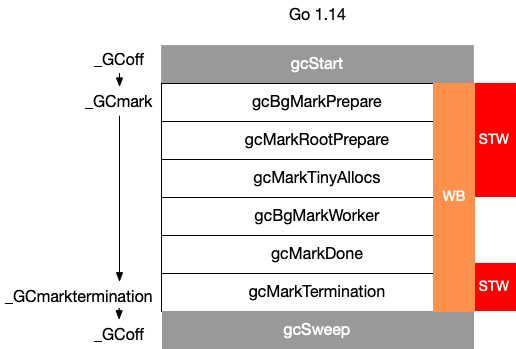

GC 的实现细节 #
10. Go 语言中 GC 的流程是什么？ #
当前版本的 Go 以 STW 为界限，可以将 GC 划分为五个阶段：
| 阶段 | 说明 | 赋值器状态 |
|---|---|---|
| SweepTermination | 清扫终止阶段，为下一个阶段的并发标记做准备工作，启动写屏障 | STW |
| Mark | 扫描标记阶段，与赋值器并发执行，写屏障开启 | 并发 |
| MarkTermination | 标记终止阶段，保证一个周期内标记任务完成，停止写屏障 | STW |
| GCoff | 内存清扫阶段，将需要回收的内存归还到堆中，写屏障关闭 | 并发 |
| GCoff | 内存归还阶段，将过多的内存归还给操作系统，写屏障关闭 | 并发 |
具体而言，各个阶段的触发函数分别为：

11. 触发 GC 的时机是什么？ #
Go 语言中对 GC 的触发时机存在两种形式：
-
主动触发，通过调用 runtime.GC 来触发 GC，此调用阻塞式地等待当前 GC 运行完毕。
-
被动触发，分为两种方式：
-
使用系统监控，当超过两分钟没有产生任何 GC 时，强制触发 GC。
-
使用步调（Pacing）算法，其核心思想是控制内存增长的比例。
-
通过 GOGC 或者 debug.SetGCPercent 进行控制（他们控制的是同一个变量，即堆的增长率 $\rho$）。整个算法的设计考虑的是优化问题：如果设上一次 GC 完成时，内存的数量为 $H_m$（heap marked），估计需要触发 GC 时的堆大小 $H_T$（heap trigger），使得完成 GC 时候的目标堆大小 $H_g$（heap goal） 与实际完成时候的堆大小 $H_a$（heap actual）最为接近，即： $\min |H_g - H_a| = \min|(1+\rho)H_m - H_a|$。
除此之外，步调算法还需要考虑 CPU 利用率的问题，显然我们不应该让垃圾回收器占用过多的 CPU，即不应该让每个负责执行用户 goroutine 的线程都在执行标记过程。理想情况下，在用户代码满载的时候，GC 的 CPU 使用率不应该超过 25%，即另一个优化问题：如果设 $u_g$为目标 CPU 使用率（goal utilization），而 $u_a$为实际 CPU 使用率（actual utilization），则 $\min|u_g - u_a|$。
求解这两个优化问题的具体数学建模过程我们不在此做深入讨论，有兴趣的读者可以参考两个设计文档：Go 1.5 concurrent garbage collector pacing[5] 和 Separate soft and hard heap size goal[6]。
计算 $H_T$ 的最终结论（从 Go 1.10 时开始 $h_t$ 增加了上界 $0.95 \rho$，从 Go 1.14 开始时 $h_t$ 增加了下界 0.6）是：
- 设第 n 次触发 GC 时 (n > 1)，估计得到的堆增长率为 $h_t^{(n)}$、运行过程中的实际堆增长率为 $h_a^{(n)}$，用户设置的增长率为 $\rho = \text{GOGC}/100$（ $\rho > 0$）则第 $n+1$ 次出触发 GC 时候，估计的堆增长率为：
$$ h_t^{(n+1)} = h_t^{(n)} + 0.5 \left[ \frac{H_g^{(n)} - H_a^{(n)}}{H_a^{(n)}} - h_t^{(n)} - \frac{u_a^{(n)}}{u_g^{(n)}} \left( h_a^{(n)} - h_t^{(n)} \right) \right] $$
-
特别的，$h_t^{(1)} = 7 / 8$，$u_a^{(1)} = 0.25$，$u_g^{(1)} = 0.3$。第一次触发 GC 时，如果当前的堆小于 $4\rho$ MB，则强制调整到 $4\rho$ MB 时触发 GC
-
特别的，当 $h_t^{(n)}<0.6$时，将其调整为 $0.6$，当 $h_t^{(n)} > 0.95 \rho$ 时，将其设置为 $0.95 \rho$
-
默认情况下，$\rho = 1$（即 GOGC = 100），第一次触发 GC 时强制设置触发第一次 GC 为 4MB，可以写如下程序进行验证：
|
|
我们先来验证最简单的一种情况，即第一次触发 GC 时的堆大小：
$ go build -o main
$ GODEBUG=gctrace=1 ./main
#allocate: 1
(...)
#allocate: 20
gc finished
gc 1 @0.001s 3%: 0.016+0.23+0.019 ms clock, 0.20+0.11/0.060/0.13+0.22 ms cpu, 4->5->1 MB, 5 MB goal, 12 P
scvg: 8 KB released
scvg: inuse: 1, idle: 62, sys: 63, released: 58, consumed: 5 (MB)
terminate
通过这一行数据我们可以看到：
gc 1 @0.001s 3%: 0.016+0.23+0.019 ms clock, 0.20+0.11/0.060/0.13+0.22 ms cpu, 4->5->1 MB, 5 MB goal, 12 P
- 程序在完成第一次 GC 后便终止了程序，符合我们的设想
- 第一次 GC 开始时的堆大小为 4MB，符合我们的设想
- 当标记终止时，堆大小为 5MB，此后开始执行清扫，这时分配执行到第 20 次，即 20*0.25 = 5MB，符合我们的设想
我们将分配次数调整到 50 次
|
|
来验证第二次 GC 触发时是否满足公式所计算得到的值（为 GODEBUG 进一步设置 gcpacertrace=1）：
$ go build -o main
$ GODEBUG=gctrace=1,gcpacertrace=1 ./main
#allocate: 1
(...)
pacer: H_m_prev=2236962 h_t=+8.750000e-001 H_T=4194304 h_a=+2.387451e+000 H_a=7577600 h_g=+1.442627e+000 H_g=5464064 u_a=+2.652227e-001 u_g=+3.000000e-001 W_a=152832 goalΔ=+5.676271e-001 actualΔ=+1.512451e+000 u_a/u_g=+8.840755e-001
#allocate: 28
gc 1 @0.001s 5%: 0.032+0.32+0.055 ms clock, 0.38+0.068/0.053/0.11+0.67 ms cpu, 4->7->3 MB, 5 MB goal, 12 P
(...)
#allocate: 37
pacer: H_m_prev=3307736 h_t=+6.000000e-001 H_T=5292377 h_a=+7.949171e-001 H_a=5937112 h_g=+1.000000e+000 H_g=6615472 u_a=+2.658428e-001 u_g=+3.000000e-001 W_a=154240 goalΔ=+4.000000e-001 actualΔ=+1.949171e-001 u_a/u_g=+8.861428e-001
#allocate: 38
gc 2 @0.002s 9%: 0.017+0.26+0.16 ms clock, 0.20+0.079/0.058/0.12+1.9 ms cpu, 5->5->0 MB, 6 MB goal, 12 P
我们可以得到数据：
- 第一次估计得到的堆增长率为 $h_t^{(1)} = 0.875$
- 第一次的运行过程中的实际堆增长率为 $h_a^{(1)} = 0.2387451$
- 第一次实际的堆大小为 $H_a^{(1)}=7577600$
- 第一次目标的堆大小为 $H_g^{(1)}=5464064$
- 第一次的 CPU 实际使用率为 $u_a^{(1)} = 0.2652227$
- 第一次的 CPU 目标使用率为 $u_g^{(1)} = 0.3$
我们据此计算第二次估计的堆增长率：
$$ h_t^{(2)} = h_t^{(1)} + 0.5 \left[ \frac{H_g^{(1)} - H_a^{(1)}}{H_a^{(1)}} - h_t^{(1)} - \frac{u_a^{(1)}}{u_g^{(1)}} \left( h_a^{(1)} - h_t^{(1)} \right) \right] $$
$$ = 0.875 + 0.5 \left[ \frac{5464064 - 7577600}{5464064} - 0.875 - \frac{0.2652227}{0.3} \left( 0.2387451 - 0.875 \right) \right] $$
$$ \approx 0.52534543909 $$
因为 $0.52534543909 < 0.6\rho = 0.6$，因此下一次的触发率为 $h_t^{2} = 0.6$，与我们实际观察到的第二次 GC 的触发率 0.6 吻合。
12. 如果内存分配速度超过了标记清除的速度怎么办？ #
目前的 Go 实现中，当 GC 触发后，会首先进入并发标记的阶段。并发标记会设置一个标志，并在 mallocgc 调用时进行检查。当存在新的内存分配时，会暂停分配内存过快的那些 goroutine，并将其转去执行一些辅助标记（Mark Assist）的工作，从而达到放缓继续分配、辅助 GC 的标记工作的目的。
编译器会分析用户代码，并在需要分配内存的位置，将申请内存的操作翻译为 mallocgc 调用，而 mallocgc 的实现决定了标记辅助的实现，其伪代码思路如下：
|
|